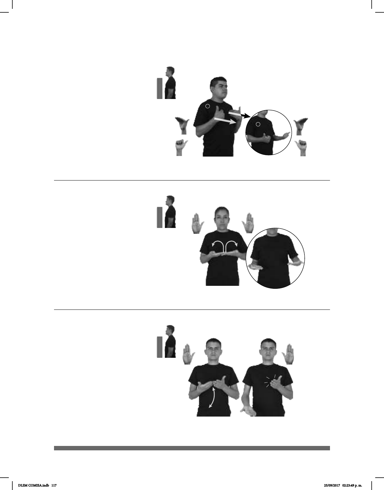

117
(B-P 19)
OH-YA-ENTIENDO GRACIAS pro-TÚ EXPLICAR pro-YO
Oh, ya entiendo, gracias por explicarme.
Ahora
1
2
(B-P 20)
AHORA dm-SERGIO pro-ÉL LLAMAR AHORA MISMO
Sergio está llamando ahora mismo.
Seña: SS
Seña que pasa de
B-P.7 a A.1
Las palmas inician hacia
adentro y terminan hacia arriba.
Sobre el pecho.
Recto hacia enfrente
mientras los antebrazos giran y los dedos
Cabeceo de atrás
hacia adelante, boca abierta con labios
redondeados.
loc. v. Expresión que se
ha quedado claro.
Seña: SS
B-P.2
Las palmas inician
hacia arriba y terminan hacia arriba.
A la altura del pecho.
Las manos parten de
un mismo punto y luego se abren
hacia los lados.
1. adv. En este
momento o en el tiempo actual. 2.
sust. m. Época o momento actual
que se vive ahora.
Seña: SB
MD y MB B-P.2
MD y MB palmas
hacia arriba.
MD inicia sobre MB y
termina a la altura de la cadera, MB
a la altura del pecho.
MD recto
mientras choca contra los dedos
de MB repetidamente.
adv. En este momento
o en el tiempo actual.
(B-P 21)
AHORA pos-TÚ RECÁMARA pro-TÚ LIMPIAR
Ahora tú limpia tu recámara.
DLSM COMISA.indb 117 25/09/2017 02:23:49 p. m.